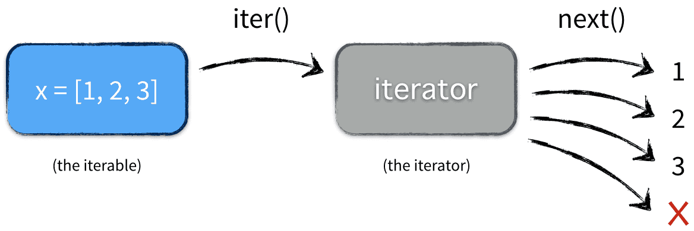

什么是容器?
容器是一种把多个元素组织在一起的数据结构，容器中的元素可以逐个迭代获取，可以用 in，not in 关键字判断元素是否包含在容器中。通常这类数据结构把所有的元素存储在内存中（也有一些特例，并不是所有的元素都放在内存，比如迭代器和生成器对象），我们常用的 string、set、list、tuple、dict 都属于容器对象。当然并不是所有容器都是可迭代的
可迭代对象:Iterable
迭代器:Iterator
一.什么是可迭代对象
可迭代对象（Iterable）就是“能被 for 循环扫一遍”的东西，官方定义只有一个条件：
实现了
__iter__()方法，且该方法返回一个迭代器（Iterator）。
比如
list [1,2,3]
tuple (1,2,3)
str "abc"
dict {'a':1}
set {1,2,3}
range(5)
open('file.txt') # 文件对象
生成器表达式 (x*x for x in range(3))
123不是迭代器
如何判断是不是?
from collections.abc import Iterable
isinstance([1,2,3], Iterable) # True
isinstance(123, Iterable) # False
二.什么是迭代器Iterator
只要实现了 __iter__() 和 __next__() 这两个方法，任何对象都能叫迭代器。
遍历状态保存在对象内部，一次性，用完就废。
当你运行for循环时候:

等同于:
it = iter(x) # ① 拿迭代器
while True:
try:
ele = next(it) # ② 不断 next
except StopIteration: # ③ 捕获结束信号
break
如果没有捕获结束信号会报错
迭代器生成代码:
class Counter:
def __init__(self, n):
self.i = 0
self.n = n
def __iter__(self): return self
def __next__(self):
if self.i >= self.n: raise StopIteration
self.i += 1
return self.i
a=Counter(10)
print(a)
for i in a:
print(i)
迭代器和可迭代对象的关系:
迭代器一定是可迭代对象，但是可迭代对象不一定是迭代器
验证
from collections.abc import Iterable, Iterator
it = iter([1, 2, 3])
isinstance(it, Iterator) # True
isinstance(it, Iterable) # True
迭代器是“可迭代对象”的子集，既能被for扫，又能用next()一个个取值
这个时候有个疑问，列表是不是迭代器？如果不是，两个有什么区别？
1.列表可以重复遍历，迭代器不可以
t = [1, 2, 3]# 列表：list
g=iter([1,2,3]) # 迭代器表达式：Iterator
print("列表")
for i in t:
print(i)
for i in t:
print(i)
print("迭代器")
for i in g:
print(i)
for i in g:
print(i)
2.列表可以t[0],迭代器不可以g[0]
生成器:
生成器（generator）是 Python 提供的一种“懒人版”迭代器：
你不用手写 __iter__ + __next__，只要在函数或表达式里出现 yield，解释器就自动把它变成生成器对象——既是迭代器，也是可迭代对象。
函数/表达式一出现 yield，Python 自动把它编译成生成器对象（带 __iter__/__next__）。
同样一次性，但代码量最少。
最经典的生成器例子
问个问题:元组是不是生成器?
不是,它只是可迭代对象
t = (1, 2, 3) # 元组：tuple
g = (x for x in (1,2,3)) # 生成器表达式：generator
type(t) # <class 'tuple'>
type(g) # <class 'generator'>
区别:
1.tuple可以重复遍历，生成器不可以
t = (1, 2, 3) # 元组：tuple
g = (x for x in (1,2,3)) # 生成器表达式：generator
print("元组")
for i in t:
print(i)
for i in t:
print(i)
print("生成器")
for i in g:
print(i)
for i in g:
print(i)
2.元组可以t[0],generator不可以g[0]
这里多提一嘴，列表推导式是个语法糖
也就是说，有列表推导式是因为列表推导式本身还是列表，但是元组推导式他不是元组而是生成器?
-
列表推导式
[x for x in ...]→ 直接给你真正的列表（list）。 -
圆括号“推导式”
(x for x in ...)→ 官方名字叫生成器表达式，返回的是生成器对象，不是元组；元组根本没有“推导式”这一说。
真正的“元组推导式”
迭代器与生成器核心知识点速览¶
-
容器是组织多元素的数据结构（如 list、tuple、dict 等），部分支持迭代，元素多存储于内存。
-
可迭代对象（Iterable）：实现
__iter__()方法且返回迭代器，能被 for 循环遍历（如列表、字符串、文件对象等），可用isinstance()结合collections.abc.Iterable判断。 -
迭代器（Iterator）：需同时实现
__iter__()和__next__()方法，内部保存遍历状态，一次性使用（用完即废）。可通过iter()将可迭代对象转为迭代器，支持 for 循环和next()取值，是可迭代对象的子集。 -
迭代器与可迭代对象（如列表）的区别：列表可重复遍历、支持索引访问（如
t[0]），迭代器不可重复遍历、不支持索引访问。 -
生成器（generator）：Python 的 “懒人版” 迭代器，无需手动实现双方法，函数或表达式中含
yield即可自动生成。包括生成器函数（带yield的函数）和生成器表达式（(x*x for x in ...)），兼具迭代器与可迭代对象特性，一次性使用且代码简洁。 -
关键区分：元组（tuple）是可迭代对象而非生成器，支持重复遍历和索引；生成器表达式≠元组推导式，需用
tuple()包裹生成器表达式才是真正的元组。
掌握三者的核心差异与使用场景，能更高效地处理数据遍历，尤其适合大数据场景下的内存优化～